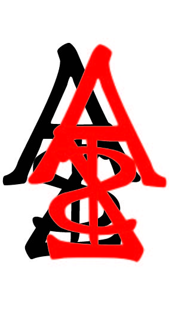

Imagine the term "the pen is mightier than the sword" were an appropriate response to the people in power determinging the direction of the EU and it's part in the Brexit. The EU origin goes back as far as the Roman Empire, Byzantine Empire, and other dynastic unions such as Frankish Empire and possibly the First French Empire of Napoleon Bonaparte. When considering the MTA of New York City I think of points A to Z and the minimal fee necessary to facilitate the delicate yet strong tether needed to put those points together. NYC is just one city; London, Tokyo, Denmark, as well as Belgium and France are member states of the UN whose currency denominations along with the other participating European Union countries that determine the present and future value of the Euro.
| London - EUR |
Tokyo - JPY |
Denmak - DKK |
| 1.14 |
0.01 |
0.15 |
Power of Fee'z - Bond Yields by region
Cost of Living - Milk